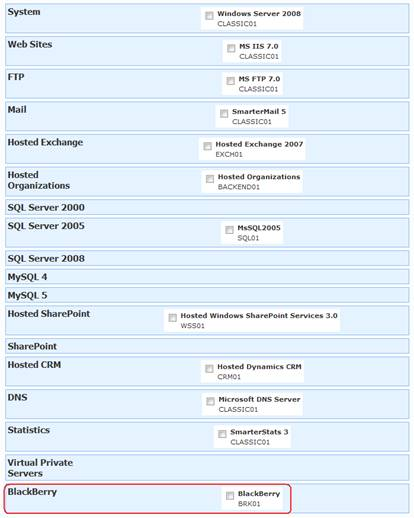

WSP Hosted BlackBerry Solution Installation Tasks
Translations:
BES versions
Note that some subsections are applicable only specific BES version provider. In this case it is marked, for example - "Adding permissions at BlackBerry level (applicable to BES 4.1 provider)". Other subsections are applicable to every BES version provider.
WSP Server account requirements
WSP Server component for BlackBerry provisioning should be deployed on the same server where BlackBerry Enterprise Server User Administration Tool client is deployed.
WSP Server account must be the domain and not local computer account.
Adding permissions at BlackBerry level (applicable to BES 4.1 provider).
Open BlackBerry manager > BlackBerry Domain > Role Administration > rim_db_admin_enterprise > then right-click > press "Add Administrators" > center WSP Server account in DOMAIN\username form. Finally WSP Server account permissions at BlackBerry level should look like on this picture:
Setting up Active Directory Settings
Active Directory Settings for server with Hosted BlackBerry module should be the same as for the server with Hosted Organizations module.
Security mode. Create Active Directory Accounts
Authentication Type. None
Root domain. Your AD domain DNS name.
Username and password. Stay those fields empty.
Setting up Hosted BlackBerry Service
Add BlackBerry service.
Specify the following service settings (applicable to BES 4.1 provider):
- BESUserAdminClient.exe utility path. Path to BlackBerry Enterprise Server User Administration Tool client (BESUserAdminClient.exe) file.
- Password. Password that the BlackBerry Enterprise Server User Administration Tool client uses to authenticate with the BlackBerry Enterprise Server User Administration Tool service (entered during BESUserAdminService.exe deployment).
- BlackBerry Enterprise Server. BlackBerry Enterprise Server name (NETBIOS or hostname, not FQDN).
- Enterprise Server User Administration Tool service. BlackBerry Enterprise Server User Administration Tool service computer name (fill if the BlackBerry Enterprise Server User Administration Tool service and the BlackBerry Enterprise Server User Administration Tool client do not run on the same computer, otherwise leave blank).
Specify the following service settings (applicable to BES 5.0 provider):
- BESUserAdminClient.exe utility path. Path to BlackBerry Enterprise Server User Administration Tool client (BESUserAdminClient.exe) file.
- Authentication user name. Name of account in BlackBerry Administration Service used by WSP to call BlackBerry Administration Service with BESUserAdminClient.exe (currently tested only using BAS, not AD authantication).
- Authentication password. Password for account from previous field.
- BlackBerry Enterprise Server instance. BlackBerry Enterprise Server instance name (usually the same as BES server name you get from hostname command).

Updating Virtual Server
Update Virtual Server that you are using for Exchange Hosting Plans by adding BlackBerry service.

Create Hosting Plans or/and Hosting Add-ons
Testing BlackBerry module
- Create a new Hosting Space with BlackBerry service or extend the existing Hosting Space by adding BlackBerry add-on.
- Create a new Hosted Organization and a new mailbox in the new Hosting Space.
- Create a new BlackBerry user and ensure that it appears in both Hosted Organization and BlackBerry Manager management tool on BlackBerry server.
Importing existing BlackBerry users
To import existing Blackberry users into WebsitePanel one-by-one use the following SQL script. Just type primary email address of the account in the @Email variable and run the script against WSPEnterpriseServer database. Please note that account should be registered in WebsitePanel as Exchange mailbox.
DECLARE @Email nvarchar(400) SET @Email = 'test@test.com' DECLARE @AccountID int SELECT @AccountId = AccountID FROM dbo.ExchangeAccounts WHERE LOWER(PrimaryEmailAddress) = LOWER(@Email) INSERT INTO dbo.BlackBerryUsers ( AccountID, CreatedDate, ModifiedDate) VALUES ( @AccountID, getdate(), getdate() )